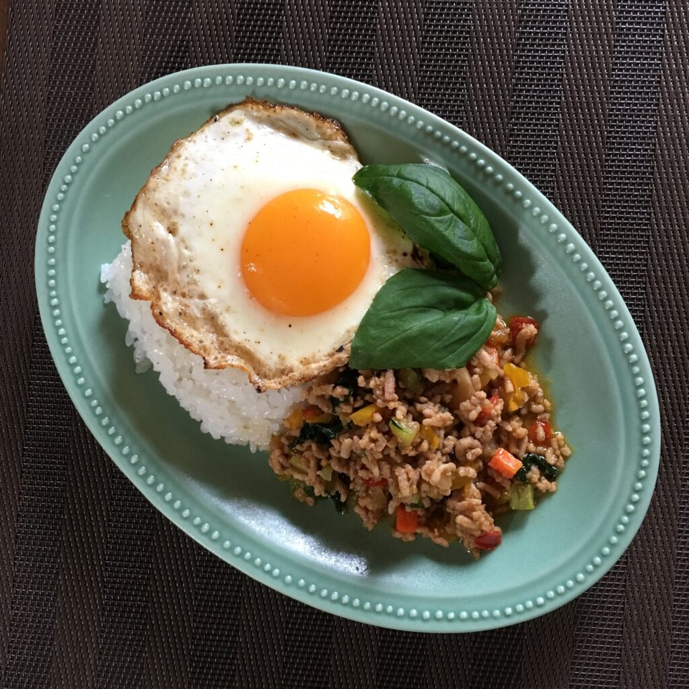

Go back
Gapao Rice

What is it?
"Gapao rice" (also known as "Pad Kra Pao" or "Thai Holy Basil Stir-Fry") is a popular Thai dish consisting of stir-fried minced meat (often pork or chicken) with holy basil, chili, garlic, and other seasonings, served over rice.
Ingredients
- Minced pork
- Thai Basil
- Chili pepper
- Garlic
- Ginger
- Soy Sauce
- Oyster Sauce
- Honey
- Jasmine Rice
How to make
- Fry the garlic, ginger and chili pepper in oil for 30 seconds
- Add the minced pork and cook until browned
- Stir in the soy sauce, oyster sauce and honey along with the thai basil
- Let it boil for 8 minutes
- Serve with jasmine rice